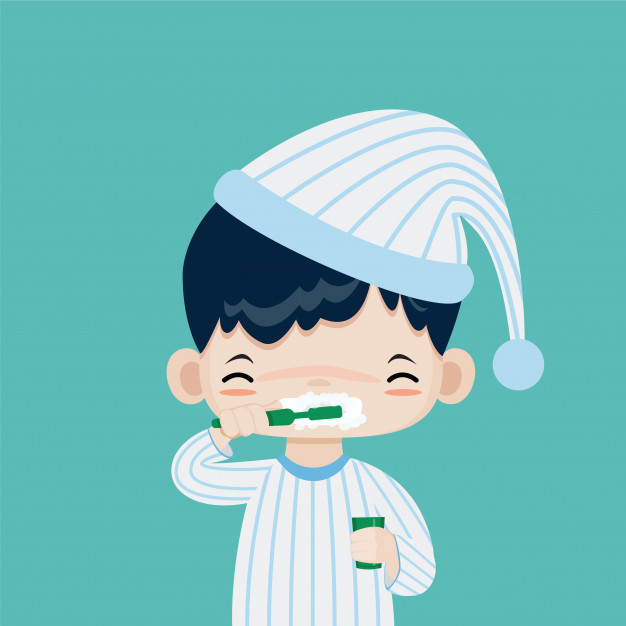
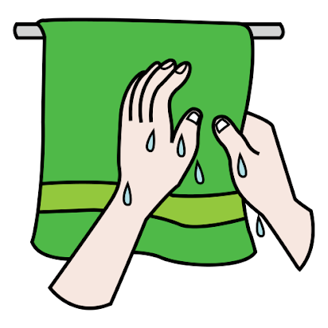
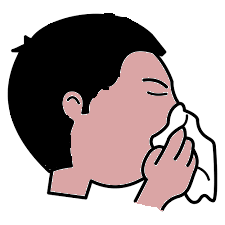

     

<main id="contenedor" class="contenedor">
  
  


  
  

</main>

<div class="botones">
  <input id="reproducir"  type="button" value="Comunicar" class="btn btn-success">

</div>


<script>


 $(document).ready(function () {

  var sonidos;
    $('#bañar').click(function (event) {
      $('#pantalla_tres').replaceWith("");       
      sonidos=1;
      })

     
      $('#cepillarse').click(function (event) {
      $('#pantalla_tres').replaceWith("");       
      sonidos=3;
      })
     
      $('#manos').click(function (event) {
      $('#pantalla_tres').replaceWith("");       
      sonidos=4;
      })
      $('#nariz').click(function (event) {
      $('#pantalla_tres').replaceWith("");       
      sonidos=6;
      })
      $('#secar').click(function (event) {
      $('#pantalla_tres').replaceWith("");       
      sonidos=5;
      })

      $('#reproducir').click(function () {

      $('#contenedor').load('play.html')
    
      })


      /* REPDUCION DE SONIDOS  */
      $('#reproducir').click(function(){
          
        var bañar= new Audio();
          bañar.src="../comunicate/sonidos/higiene/banarnoq.wav";
 
        var cepillarse= new Audio();
          cepillarse.src="../comunicate/sonidos/higiene/cepillarsenoq.wav";
        var manos= new Audio();
          manos.src="../comunicate/sonidos/higiene/manosnoq.wav";
          var secar= new Audio();
          secar.src="../comunicate/sonidos/higiene/secarnoq.wav";
          var nariz= new Audio();
          nariz.src="../comunicate/sonidos/higiene/nariznoq.wav";
        /*   var error= new Audio();
          error.src="../comunicate/sonidos/error.wav"; */
     


          switch (sonidos) {
              case 1:
                      bañar.play()
                  break;
                
                  case 3:
                      cepillarse.play()
                  break;
                  case 4:
                      manos.play()
                  break;
                  case 5:
                      secar.play()
                  break;
                  case 6:
                      nariz.play()
                  break;
                
          
             
          }
       


      })
  
});


     


</script>